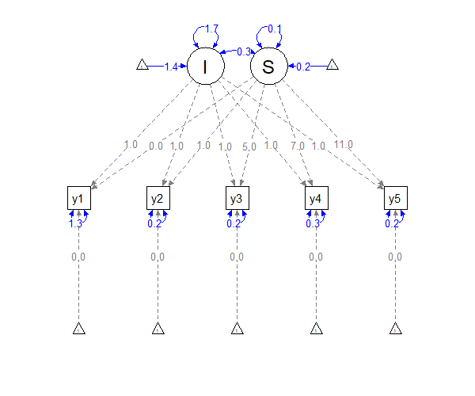

Latent-Growth-Curve
Latent-Growth-Curve.RmdLatent growth curve models are structural equation models (SEMs) that
are used to analyze longitudinal data. Let’s assume that we measured
variable y at five distinct measurement occasions:
(y1-y5). Our dataset could look as
follows:
#> y1 y2 y3 y4 y5
#> [1,] 0.3864953 -0.06529094 -0.4222490 -1.005476 -1.465179
#> [2,] 0.7590169 1.29900198 1.7353884 3.191772 3.398401
#> [3,] 2.4704757 2.50191119 2.6700638 2.954769 3.289809
#> [4,] 1.2120261 1.07876607 1.1939455 1.134083 1.210485
#> [5,] 1.5203465 0.18444582 -0.6210527 -1.122420 -1.372055
#> [6,] 2.7988615 2.94309178 3.3244717 3.687479 4.307398Let us further assume that the measurements took place at baseline (time \(t_1 = 0\)), after \(t_2 = 1\) week, \(t_3 = 5\) weeks, \(t_4 = 7\) weeks, and \(t_5 = 11\) weeks. With linear latent growth curve models, the observations of individual \(i\) at the five measurement occasions \(u=1,...,5\) are predicted with a latent intercept (\(I\)) and a latent slope (\(S\)) using the equation \[y_{it_u} = I_i + S_i\times t_u+\varepsilon_{it_u}\] Note how time is used as a predictor here; that is, we assume a linear growth over time. However, we also assume that individuals may differ in the intercept \(I\) and the slope \(S\). More precisely, we assume that \(I\) and \(S\) are mutivariate normally distributed and \(I\) may be \(0.4\) for the first person, but \(-1.2\) for the second. SEMs allow us to capture these assumptions in a single model:

In the Figure shown above, blue paths denote estimated parameters and gray paths are fixed to specific values. Note that the paths of the latent intercept (\(I\)) to the observations (\(y_1\)-\(y_5\)) are constrained to \(1\), while the paths of the latent slope (\(S\)) are set to the times \(t_1 = 0\), \(t_2 = 1\), \(t_3 = 5\), \(t_4 = 7\), and \(t_5 = 11\). Because \(I\) and \(S\) are modeled as latent variables with variances, covariances, and means, the model allows for person-specific parameters (this is identical to a random effect in mixed models).
Such latent growth curve models can be set up with lavaan (Rosseel, 2012). For instance, the model shown above can be defined with:
model <- "
# specify latent intercept
I =~ 1*y1 + 1*y2 + 1*y3 + 1*y4 + 1*y5
# specify latent slope
S =~ 0 * y1 + 1 * y2 + 5 * y3 + 7 * y4 + 11 * y5
# specify means of latent intercept and slope
I ~ int*1
S ~ slp*1
# set intercepts of manifest variables to zero
y1 ~ 0*1; y2 ~ 0*1; y3 ~ 0*1; y4 ~ 0*1; y5 ~ 0*1;
"Person-Specific Occasions
Note: Such models can also be specified with metaSEM (Cheung, 2015)
In the model outlined above it was assumed that all individuals were observed at the same time points (\(0\), \(1\), \(5\), \(7\), and \(11\)). In many studies, however, this is not the case. For instance, measurements may have been at random occasions to provide more insights into everyday life. Or reports may have been provided by the participants at self-selected occasions. The following is an example of such a data set:
library(mxsem)
lgc_dat <- simulate_latent_growth_curve(N = 100)
head(lgc_dat)
#> y1 y2 y3 y4 y5 t_1 t_2
#> [1,] -0.2014280 -1.3037213 -1.8961838 -2.9602324 -3.299839 0 1.6942796
#> [2,] 0.2409314 -0.6886326 -0.6764733 -0.6766266 -2.232896 0 1.2068552
#> [3,] 1.2855548 1.8786683 2.5187949 2.4337790 3.378605 0 1.7533227
#> [4,] 2.6009112 2.6487864 3.9121769 3.7639211 4.160798 0 0.4281481
#> [5,] 2.1826775 -0.8370066 -2.6128334 -3.7611694 -8.002010 0 1.3503621
#> [6,] 0.6352425 1.7210440 2.5697578 3.5033485 4.016309 0 0.7148420
#> t_3 t_4 t_5
#> [1,] 3.212704 4.852857 5.183994
#> [2,] 1.682294 2.141104 3.528977
#> [3,] 2.366735 4.018842 5.778890
#> [4,] 2.375866 4.237383 6.013243
#> [5,] 2.229126 2.628391 4.597698
#> [6,] 1.545012 2.221132 2.573061The columns t_1-t_5 indicate the
person-specific time points of observations. For our latent growth curve
model this implies that the loading of the latent slope variable
S on the observations y1-y4 must
be person-specific. This is expressed in the following equation, where
the time \(t_{ui}\) is person-specific:
\[y_{it_{ui}} = I_i + S_i\times
t_{ui}+\varepsilon_{it_{ui}}\] To this end, so-called definition
variables are used (see Mehta & West, 2000;
Sterba, 2014). With mxsem, this can be achieved
as follows:
model <- "
# specify latent intercept
I =~ 1*y1 + 1*y2 + 1*y3 + 1*y4 + 1*y5
# specify latent slope
S =~ data.t_1 * y1 + data.t_2 * y2 + data.t_3 * y3 + data.t_4 * y4 + data.t_5 * y5
# specify means of latent intercept and slope
I ~ int*1
S ~ slp*1
# set intercepts of manifest variables to zero
y1 ~ 0*1; y2 ~ 0*1; y3 ~ 0*1; y4 ~ 0*1; y5 ~ 0*1;
"Note how the loadings of the latent slope S on the items
are now specified with data.t_1-data.t_5. This
will tell OpenMx (Boker et al.,
2011) that these parameters should be replaced by the
person-specific variables t_1-t_5 found in the
data set lgc_dat. Everything else stayed the same.
Important: The prefix
data.is indidepent of the name of the data set in R. That is, even if our data set is calledlgc_dat, we have to usedata.t_1to refer to thet_1variable located inlgc_dat.
The model can be set up and fitted with mxsem:
# set up model
lgc_mod <- mxsem(model = model,
data = lgc_dat,
# we set scale_loadings to FALSE because the
# loadings were already fixed to specific values.
# This just avoids a warning from mxsem
scale_loadings = FALSE)
# fit
lgc_fit <- mxRun(model = lgc_mod)
#> Running untitled1 with 10 parameters
summary(lgc_fit)
#> Summary of untitled1
#>
#> free parameters:
#> name matrix row col Estimate Std.Error A lbound ubound
#> 1 y1↔y1 S y1 y1 0.04287323 0.015114751 ! 0!
#> 2 y2↔y2 S y2 y2 0.03124036 0.007923634 0!
#> 3 y3↔y3 S y3 y3 0.03322165 0.006183064 0!
#> 4 y4↔y4 S y4 y4 0.04113935 0.008824519 ! 0!
#> 5 y5↔y5 S y5 y5 0.03325120 0.013614708 ! 0!
#> 6 I↔I S I I 1.02631223 0.148514486 ! 1e-06
#> 7 I↔S S I S 0.17664698 0.108355030 !
#> 8 S↔S S S S 1.08750504 0.154308422 ! 1e-06
#> 9 int M 1 I 0.98263156 0.102429850
#> 10 slp M 1 S 0.52461301 0.104448363
#>
#> Model Statistics:
#> | Parameters | Degrees of Freedom | Fit (-2lnL units)
#> Model: 10 10 846.5694
#> Saturated: 20 0 NA
#> Independence: 10 10 NA
#> Number of observations/statistics: 100/20
#>
#> Information Criteria:
#> | df Penalty | Parameters Penalty | Sample-Size Adjusted
#> AIC: 826.5694 866.5694 869.0413
#> BIC: 800.5177 892.6211 861.0386
#> To get additional fit indices, see help(mxRefModels)
#> timestamp: 2023-08-07 15:08:49
#> Wall clock time: 0.6295478 secs
#> optimizer: SLSQP
#> OpenMx version number: 2.21.8
#> Need help? See help(mxSummary)